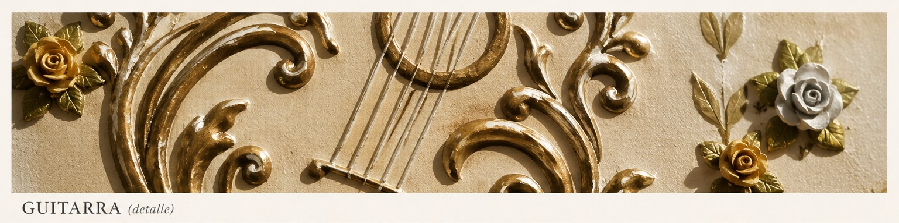
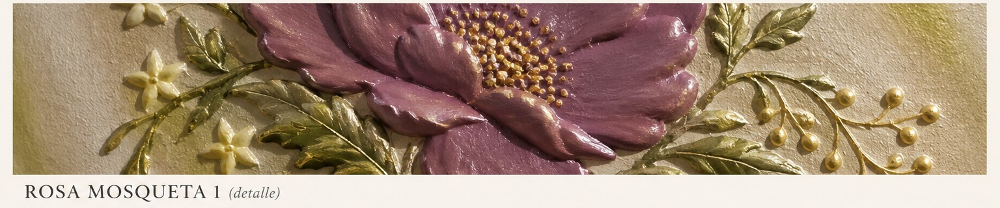
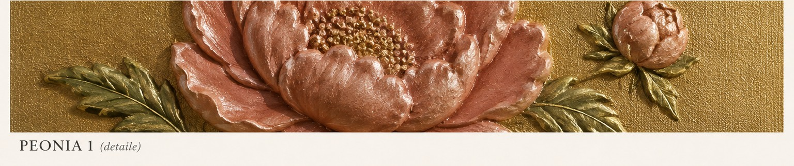

NICOLETA FILIP ART
Técnicas
El relieve como lenguaje artístico, donde materia, volumen, textura, color y luz forman parte de cada obra.
El relieve como lenguaje
El trabajo de NICOLETA FILIP parte de una idea sencilla: transformar una superficie plana en una obra donde la materia adquiere volumen, textura y presencia.
El relieve permite que la luz incida sobre las formas y genere sombras, profundidad y matices que cambian según el punto de vista. De esta manera, la obra no solo se contempla: también se percibe a través de sus formas y texturas.

Materia y volumen
Cada composición se construye trabajando el volumen de manera artesanal. Las formas adquieren diferentes alturas y texturas, creando una superficie que se aleja de la pintura tradicional y aporta una dimensión propia a cada obra.
Flores, hojas, tallos y otros elementos se integran en composiciones cuidadosamente equilibradas, donde el relieve se convierte en parte esencial de la expresión artística.
Técnica estándar
Dentro de la colección existen obras realizadas mediante una técnica estándar de relieve, cuya ficha individual recoge las características concretas de cada pieza.
Esta denominación permite mantener una clasificación clara y rigurosa en el catálogo sin atribuir materiales o procedimientos específicos que no hayan sido confirmados para cada obra.
Técnica mixta
En determinadas obras se emplea una técnica mixta, incorporando diferentes materiales y procedimientos para construir el relieve y desarrollar posteriormente su acabado.
En las obras en las que está confirmado, se utiliza:
Técnica mixta, con flores realizadas en alto relieve artesanal mediante escayola y yeso.
El resultado permite crear formas con volumen y detalle, que posteriormente se integran con el color y el acabado de cada composición.

Color, textura y luz
El color desempeña un papel fundamental en el resultado final. Los tonos, contrastes y acabados contribuyen a destacar las formas creadas en relieve y a modificar la percepción de profundidad.
La textura, por su parte, aporta carácter a la superficie. Junto con la luz, permite descubrir pequeños detalles y variaciones que forman parte de la experiencia visual de cada obra.

Una técnica al servicio de la obra
No existe una única forma de entender el relieve. Cada obra requiere una composición, un tratamiento de la materia y un acabado que permitan desarrollar su propia personalidad.
Por ello, las características técnicas de cada pieza se detallan individualmente en su ficha dentro de la colección.
Descubre las obras de NICOLETA FILIP y observa cómo la materia, el volumen, la textura y la luz adquieren una expresión diferente en cada creación.
EXPLORAR LA COLECCIÓN →